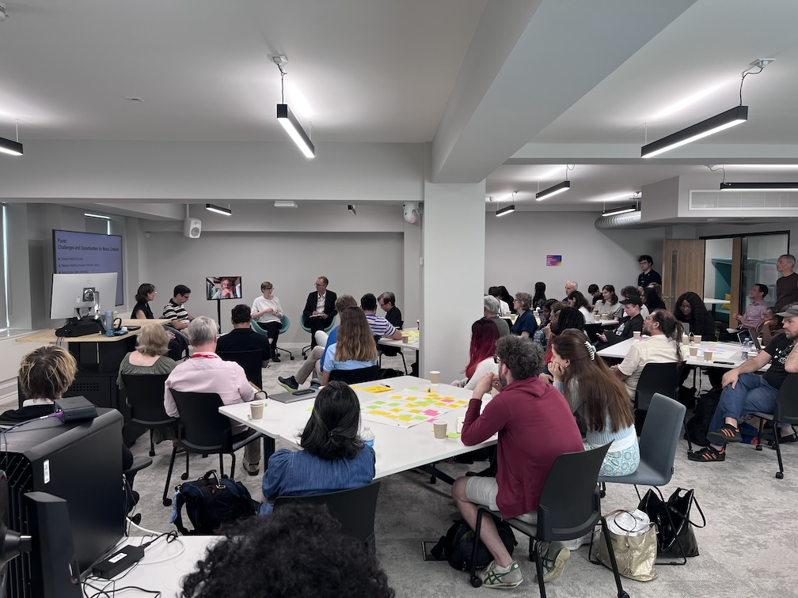
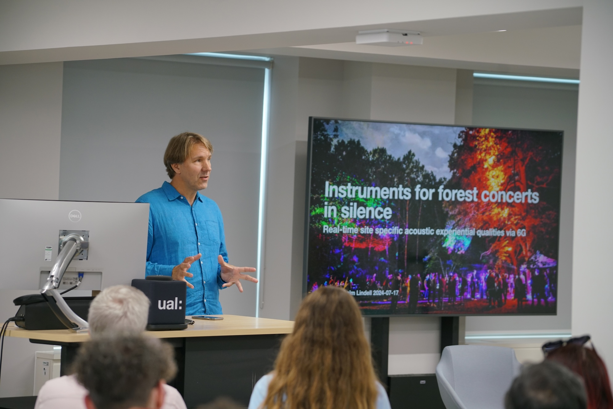
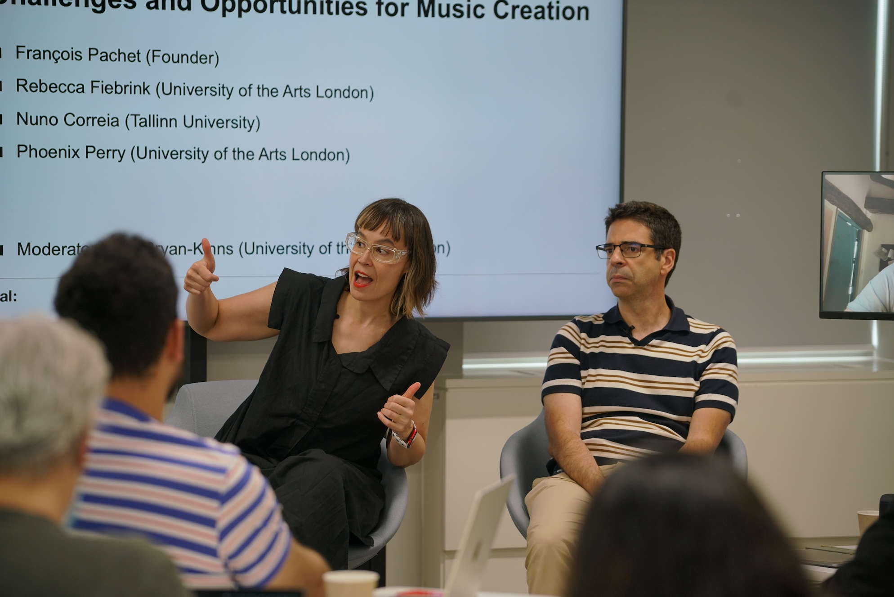
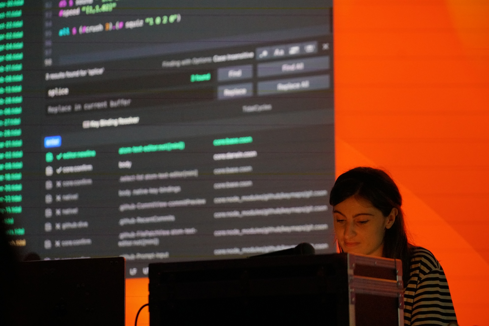
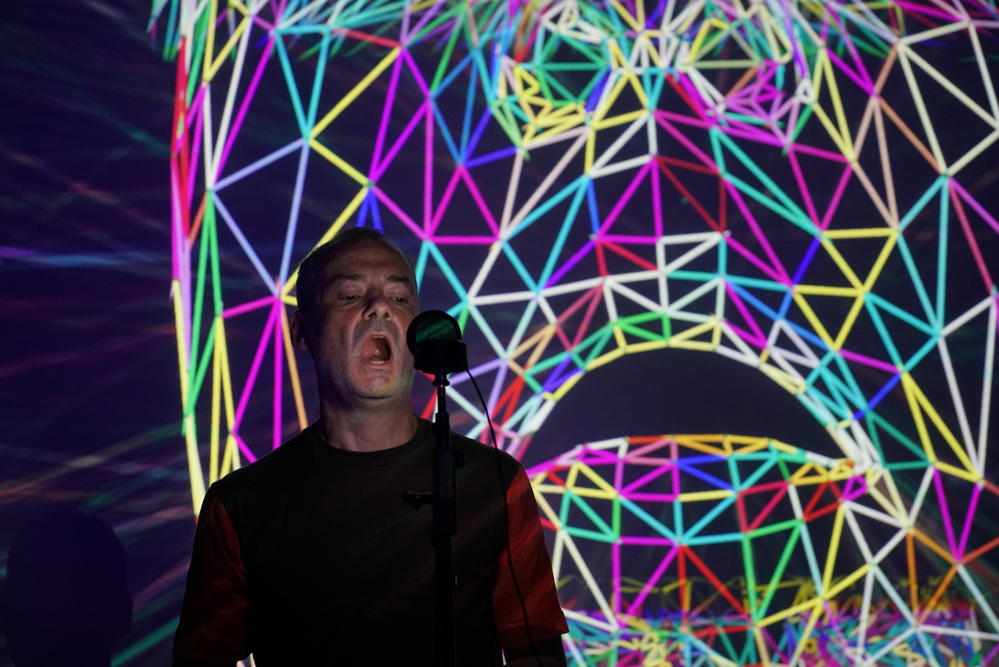
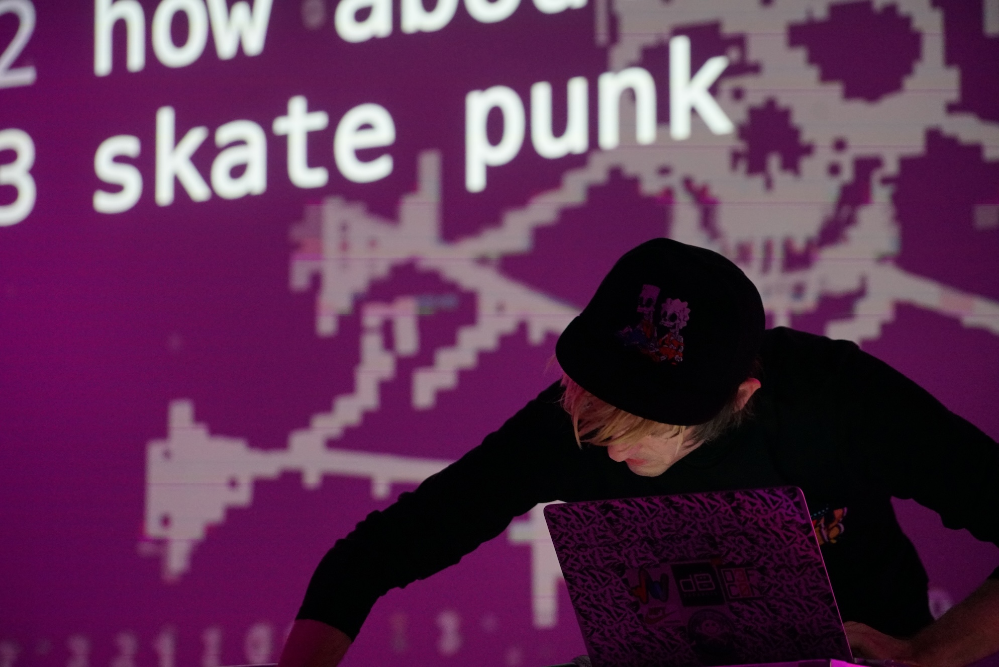
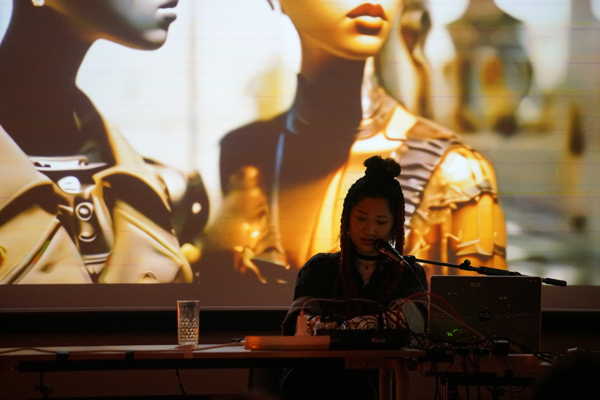

About the MusicRAI Research Project
This 12 month project "Responsible AI international community to reduce bias in AI music generation and analysis" will build an international community to address Responsible AI (RAI) challenges of bias in AI music generation and analysis.
The aim of the project is to explore ways to tackle current over-reliance on huge training datasets for deep learning leads to AI models biased towards Western classical and pop music and marginalises other music genres. We will bring together an international and interdisciplinary team of researchers, musicians, and industry experts to make available AI tools, expertise, and datasets which improve access to marginalised music genres. This will directly benefit musicians and audiences engaging with a wider range of musical genres and benefits creative industries by offering new forms of music consumption.
Ethical and Responsible AI Music Making Workshop 2024
We held a one-day workshop on Responsible Music AI with a focus on bias in AI music generation systems on 17th July 2024 at the Creative Computing Institute, University of the Arts London, Holborn, London.
We brought together over 100 people to form an interdisciplinary community of musicians, academics, and stakeholders to collaboratively identify the potential and challenges for using low-resource models and small datasets in musical practice. The workshop consisted of publicly streamed discussion panels, presentations of participants’ work, and brainstorming sessions on the future of AI and marginalised music. The event was followed by an evening reception featuring live performances sing AI and small datasets of music.
In the morning sessions we focussed on sharing and identifying current practices and challenges for AI music making with small datasets. The afternoon was dedicated to exploring opportunities and practical solutions to using small and marginalised datasets of music and other audio with AI. This forms the start of an international network and roadmap for a new ecosystem that we will build to rapidly open small music datasets and low-resource AI approaches to more wider use in music making and analysis.
|
Panel Discussion [youtube recording]
Challenges and Opportunities for Music Creation Panelists:
Moderator:
|
|
Panel Discussion (hybrid) [youtube recording]
The Future of Music Creation Panelists:
Moderator:
|
|
Live Performances
|



Team
Lead: Prof. Nick Bryan-Kinns (University of the Arts London, UK; UAL)
Prof. Rebecca Fiebrink (UAL)
Dr. Phoenix Perry (UAL)
Anna Wszeborowska (UAL)
Prof. Zijin Li (Central Conservatory of Music, China; CCoM)
Dr. Nuno Correia (Tallinn University, Estonia; TU)
Dr. Alex Lerch (Georgia Tech, USA; GT)
Prof. Sid Fels (University of British Columbia, Canada; UBC)
Dr. Gabriel Vigliensoni (Concordia University, Canada; CU)
Dr. Andrei Coronel and Dr. Raphael Alampay (Ateneo de Manila University, Philippines; AdMU)
Prof. Rikard Lindell (Dalarna University, Sweden; DU)
Partners
Music Hackspace (UK)
DAACI (UK)
Steinberg (Germany)
Bela (UK)
Objectives
- To bring together and grow the international community of researchers, creative practitioners, and AI experts interested in using musical genres marginalised by current AI systems (AI marginalisation) as datasets for AI music making practice and research.
- To establish an open repository of marginalised musical genre datasets for use in AI.
- To bring together and make available methods and tools for how artists might use techniques such as low-resource deep learning models to generate music using marginalized music genres.
- To commission a small number of speculative artistic projects resulting in international showcase of generative AI music using marginalised musical genres.
- To explore the translational potential of the AI techniques identified in this project to other creative practices.
Contact
To get involved please contact Prof. Nick Bryan-Kinns n.bryankinns@arts.ac.uk
Funding
Funded by Responsible Artificial Intelligence (RAI) UK International Partnerships (UKRI EPSRC grant reference EP/Y009800/1)